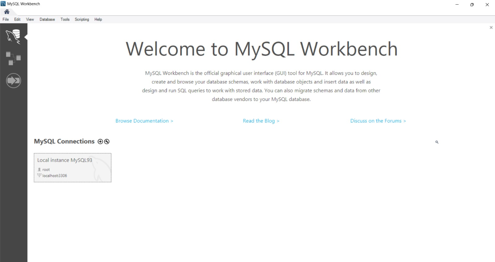
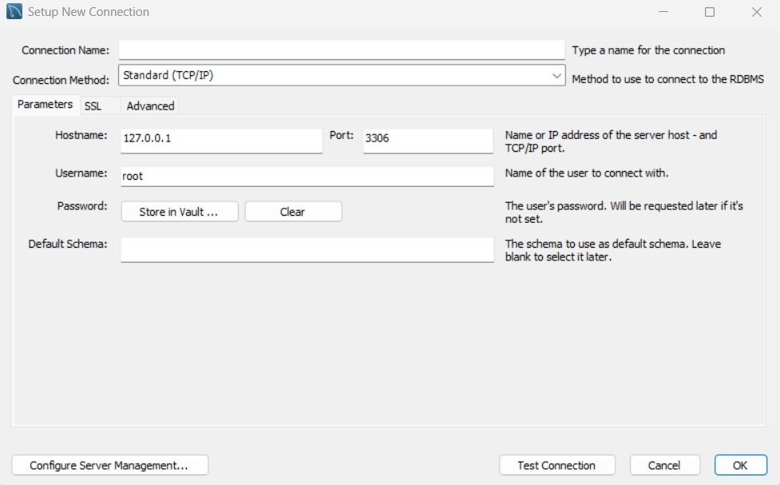
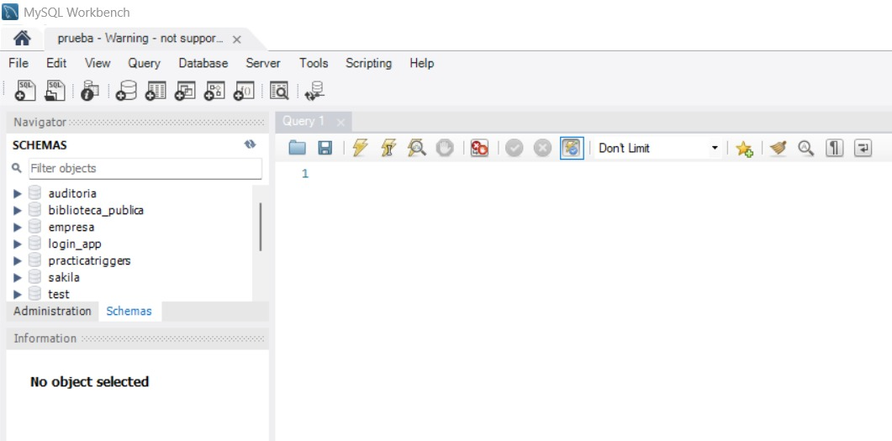
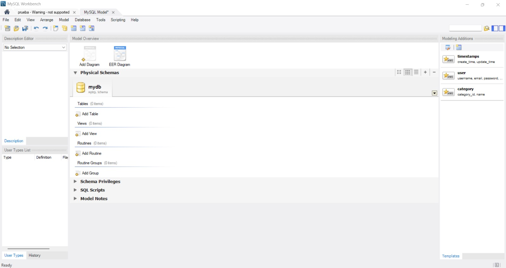
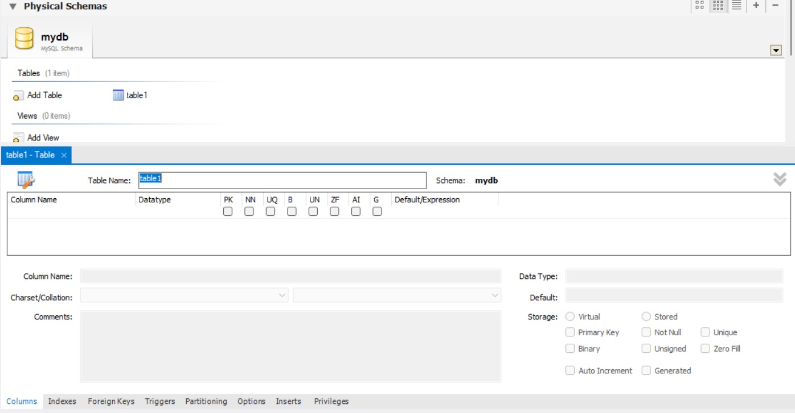
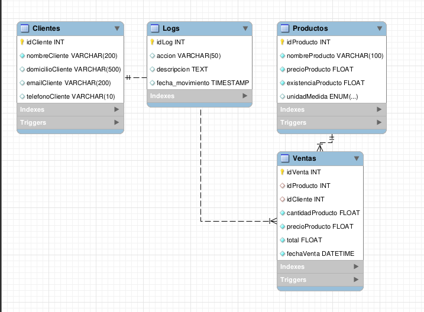
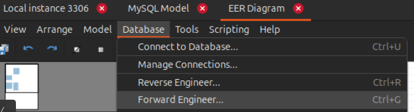
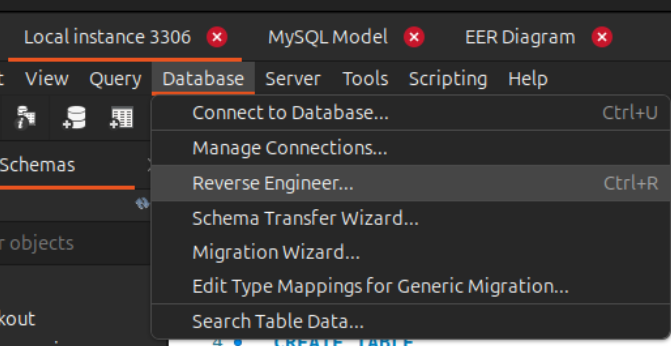
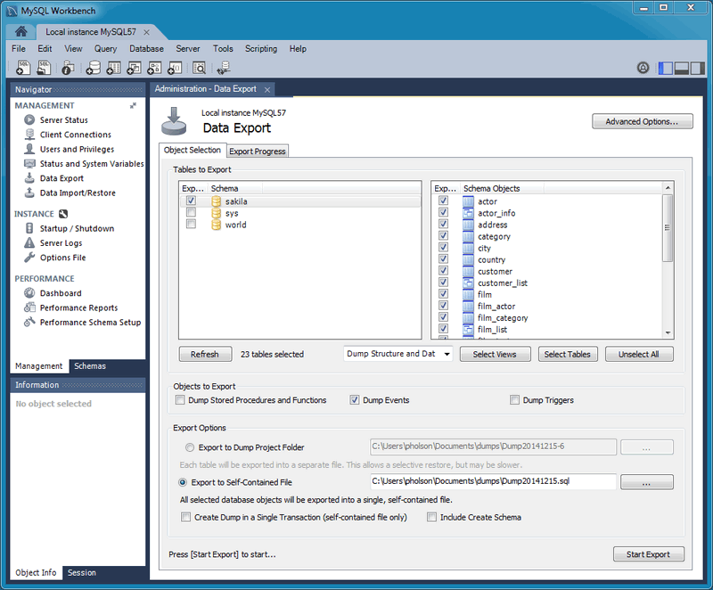
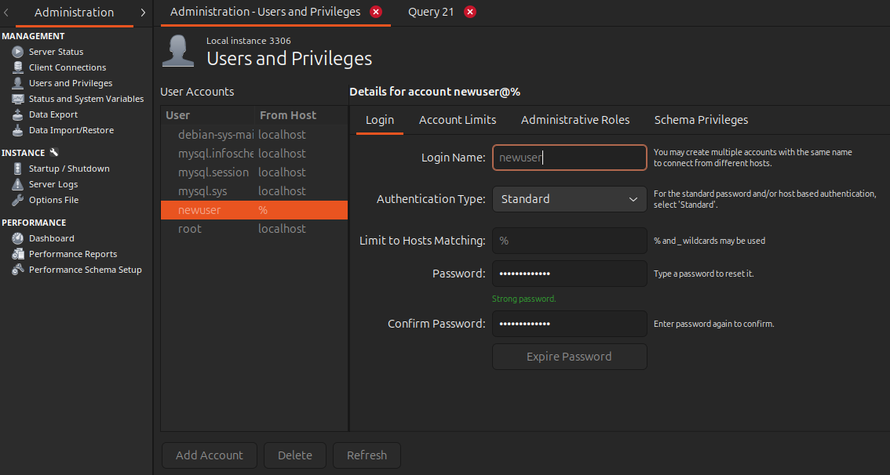

Introducción a MySQL Workbench
Carlos Alonso Luquin Lopez, Jose Reyes Hinojosa Torres y David Gonzalez Vargas
¿Qué es MySQL Workbench?
Entorno Unificado
Es una herramienta visual integral para el diseño, desarrollo y administración de bases de datos MySQL.
4 Funciones Principales
- 📐 Diseño: Modelado visual EER
- 💻 Desarrollo SQL: Editor avanzado
- ⚙️ Administración: Servidores y usuarios
- 🚀 Migración: Desde otros sistemas
Instalación y Primera Conexión


Nueva Conexión
Clic en el símbolo "+" junto a MySQL Connections en la pantalla de inicio.
Parámetros Base
Hostname: 127.0.0.1 | Puerto: 3306
Credenciales
Usuario: root y su respectiva contraseña.
Prueba y Guardado
Clic en "Test Connection" y luego "OK" para salvar la interfaz.
Interfaz y Gestión de Datos
Panel de Navegación
🗂️ Schemas
Visualización rápida de BD y tablas.
📝 Edición
Botón derecho > Select Rows.
🔍 Filtros
Caja de "Filter objects" (búsqueda).
⬇️ Export
Dump/CSV en el panel Admin.
Modelado Visual (Inicio del Modelo)

Cuerpo del Modelo (Model Overview)
Para diseñar nuestra base de datos de manera gráfica, creamos un nuevo modelo. Aquí podemos ver el esquema principal (ej. mydb). Para empezar a visualizar el diagrama y dibujar las tablas se presiona el icono "Add Diagram" o bien agregar tablas con "Add Table".
Creación de Tablas en el Modelo

🏷️ Table Name
Arriba asignamos el nombre principal de la tabla (ej. table1).
⚙️ Elementos Clave
Se despliega el panel inferior para agregar columnas con su tipo de dato y restricciones como PK (Primary Key) o NN (Not Null).
Diagrama de Entidad-Relación (EER)

Resultado del Modelado
La imagen muestra un modelo EER completo. Aquí se pueden apreciar claramente las distintas entidades, sus atributos clave y detallar cómo se conectan los datos entre sí (relaciones de esquema).
Forward Engineering (De Modelo a Código)

🔧 Opciones
Permite omitir la creación de tablas existentes (DROP objects) o exportar solo ciertas tablas.
Reverse Engineering (De Base de Datos a Diagrama)
📄 Beneficios
Ideal para documentar bases de datos creadas por código o para entender la estructura de proyectos heredados.

Exportación e Importación de Datos (Backups)

📂 Formatos
Puedes exportar la base de datos completa como un único archivo .sql o como múltiples archivos separados.
Administración de Usuarios y Privilegios 🛡️

🔑 Roles
Crea usuarios dedicados con contraseñas seguras y asígnales roles específicos solo para las tablas o acciones necesarias.
Conceptos Clave de SQL
🔍 Cláusulas Comunes
FROM: Especifica la tabla principal de donde se extraen los datos.
WHERE: Filtra los registros que cumplen con una condición específica (muy necesario para ser precisos).
🔗 Relaciones y Modificación
JOIN: Combina filas de distintas tablas basándose en una columna en común.
UPDATE / DELETE: Comandos que modifican o eliminan registros en la base de datos (se combinan con WHERE).
Creación de Base de Datos
🗄️ Crear y Seleccionar
CREATE DATABASE mi_empresa;
USE mi_empresa;📋 Crear Tabla Básica
CREATE TABLE Empleados (
id INT PRIMARY KEY AUTO_INCREMENT,
nombre VARCHAR(50),
puesto VARCHAR(50)
);Consultas Básicas (SQL FUNDAMENTAL)
🔍 SELECT y WHERE
SELECT * FROM Empleados;
SELECT nombre, puesto FROM Empleados WHERE puesto = 'Gerente';➕ INSERT (Crear Registros)
INSERT INTO Empleados (nombre, puesto)
VALUES ('Ana Gómez', 'Administradora');Modificación y Eliminación (PRECAUCIÓN)
✏️ UPDATE (Actualizar Datos)
UPDATE Empleados SET puesto = 'Directora' WHERE id = 1;🗑️ DELETE (Borrar Registros)
DELETE FROM Empleados WHERE id = 3;Mejores Prácticas
- 📐 Diseño: Normalice tablas (al menos hasta 3NF) y use convenciones claras para nombres.
- 🛡️ Seguridad: ¡Nunca opere la app con el usuario `root`! Asigne permisos limitados.
- ⚡ Rendimiento: Indexe columnas clave en WHERE/JOIN, y evite `SELECT *` si no ocupa todo.
- 💾 Respaldo: Realice y pruebe backups de manera periódica usando la herramienta Data Export.
¡Gracias por su atención!
Fin del Manual: MySQL Workbench